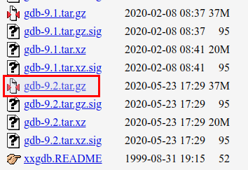

想要使用vim+gdb的模式，但是本机上的gdb为7.2, 需要手动编译最新的gdb9.2.
卸载本机gdb
使用rpm -qa | grep gdb检查，但是虽然本机上可以使用gdb，上一条指令却没有任何结果。最后使用apt remove删除了gdb。
安装新版本gdb
在gun.org上获取gdb-9.2.tar.gz

注：如果使用浏览器下载太慢，可以使用 xdm 进行下载
解压
进入解压后的文件夹gdb-9.2
在本文件夹打开终端，如果此时直接执行./configure后不会有结果，需要根据提示新建一个文件夹
mkdir build
cd build
pwd得到configure文件的绝对路径后执行
make
键入make后就需要等待一段时间了。
最后一步: sudo make install